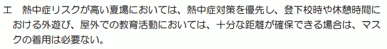

- 更新日
- 公開日
（2）管理を容易にするための制限強化ではなく、本当の教育を
主な質疑
👷♂️作成中です🚧
目次
今回質問する理由
最近、市内の学校で起きている事例
つい最近、小平市立の小・中学校で起きている事例を紹介する。それぞれ別の学校で起きており、気温が高い日の出来事が多い。氷山の一角と捉える必要がある。
マスクをつけていないことを注意する児童
たとえば、下校途中、ある児童が、マスクをつけていない児童に対して、マスクを外してはいけないと注意し、言われた子がうつむいていた。
本人の特定につながるので詳細は言えないが、実際は、注意した子が大きな誤解をしていて、さらに（本人の心理状態が）心配になる発言もしていた。
大縄跳びの練習中もマスクをつけたまま
また、運動会に向けた大縄跳びの練習で、生徒ほぼ全員がマスクをつけたまま跳んでいた状況もあった。教育委員会に確認したところ、（その学校では）3密になるところで大声を出さないという条件を守って（大縄跳びの練習では）マスクをつけるよう指導しているという話だった。
大声と3密を避ける根拠は、令和2年7月30日の新型コロナウイルス感染症対策アドバイザリーボードの資料にあるといういうことだが、これはもう2年前のこと。状況はかなり変わっている。いつまでこれを根拠にし続けるのか。
🤔 大声と3密を避ける科学的な根拠はない
大声と3密については、令和2年7月30日の新型コロナウイルス感染症対策アドバイザリーボードの資料が根拠になっているということです。読んでみると、次のような記述があります。
それから、クラスターがいろいろなところで起きているが、可能性としては、場所は違うけれども、3密プラス、大声プラス、換気が悪いというところが相変わらず共通の感染の契機ではないかという仮説があるので、それが本当であれば、そちらをもう一回、言っていく必要があるのではないか。（尾身構成員）
東京都を中心に接待を伴う飲食店や会食を介した感染拡大が続いており、地方でもショーパブや昼カラオケなどによるクラスター感染が報道されている。世界保健機関（WHO）は9日に、新型コロナウイルス感染について新たなガイドラインを示し、混雑した換気の悪い環境下における、空気中を漂う微粒子「エアロゾル」を介した感染を認めている。我が国がこれまで取り組んできた、3密の回避、大声を上げる環境の回避、換気の徹底などの必要性が改めて強く示唆される。（直近の感染状況の評価等）
この時点であっても、尾身メンバーですら「仮説」と言っています。また、必要性が「示唆」されるとしているものです。つまり科学的な根拠はないと暗に述べています。
現在は、陽性者の重症化率も、インフルエンザ並みか、もしくはそれ以下に低下しています。特に、子どもたちに至っては、酸欠や熱中症で倒れるリスクの方が高いことは容易に想像できます。
その状況を背景に、テレビでも放送されているように、海外では、コロナは終わっているものと捉え、人々がコロナ以前のように暮らしている国が多くあります。日本はこの過剰な対策をいつまで続けるつもりなのでしょうか。弱い立場の子どもや高齢者にしわ寄せが来ています。
さんざん私も伊藤議員も言っているように、大人たちは、飲食店で大声で3密の状態で、マスクなしで会話して楽しくやっている。それで感染が増える状況にはない。
それなのに、小平市立学校版感染症予防ガイドラインの中にも、まだ大声で3密を避けるみたいなことが書いてあり、それが原因で、大縄跳びの練習で、生徒ほぼ全員がマスクをつけたまま跳んでいる。かなり危険な状況と思う。
酸欠や熱中症のリスクをもっと懸念すべき
酸欠になったり、熱中症の危険もこれからは出てくる。非常に問題。ガイドラインから、大声で3密と書いてあるところは省くことを今検討してもらいたい。でないと、いつになっても省けないことになる。
屋外を歩く授業でも基本的にマスク着用と指導があった
次に、屋外を1時間以上歩いて移動する授業で、先生から事前に、基本的にマスクの着用をしてください、苦しい場合は横を向いて深呼吸をしてもよいという指示があった。
その移動中、マスク着用を実質的に強いられていることに怒り出したり、顔が赤くなったり、見るからにつらい様子の児童が何人もいた。具合が悪くなる子もいて、途中で帰ることになったという状況もあった。
運動会の徒競走で、ほぼ全員がマスクをつけて走っていた
また、運動会の徒競走で、4クラスのうち3人以外の全員がマスクをつけたまま走っている状況もあった。先生からは「苦しいときはマスクを外してもよい。マスクを外している子がいても、事情があるかもしれないから注意しないこと」といった話はあったということだが、付け加えて「ただし、しゃべっていたら注意してもよい」という指示があった。
マスクを外したらしゃべらないという指導があった
また、体育の時間に「苦しいときはマスクを外してもよい」と言いながら、「でもしゃべらないこと」という指示があった。
これは本当に氷山の一角。少し集めただけでもこれだけの声が集まるし、実際に私が目撃した状況も含まれている。
このようなことを憂慮して請願第12号が全会一致で採択されている
本年3月の定例会では、上記のような状況も憂慮し、請願第12号が全会一致で採択された。市の教育委員会は、この請願事項を一部ガイドラインに反映した。
厚生労働大臣が求めている状況ともまったく違う
また、本年5月20日の記者会見で、厚生労働大臣が次のように述べている。
屋外で、身体的な距離が確保できない場合で、会話をほとんど行わない場合、こうした場合は、もともと（マスクを）外してよいという考え方ではありました
これまで厚生労働省が出してきた方針は分かりにくいものばかりだが、私がよく読んできたところでは、この発言は正しい。
それなのに、なぜいまだに先ほど述べたような状況があるのか。
大きなひとつの原因は、結局、現場を支える大人たちの考え方や姿勢にあるのではないか
この原因は、市長や教育長を始め、教育委員会、校長先生の消極的な姿勢や、不当な制限の強化もひとつの大きな要因で、つまり、大人の都合や組織運営上の都合が最優先されてしまい、子ども中心の視点が欠落しているのではないか。
そんな疑念をどうしても持たざるを得ないことから、市に問う。
市は、上記した状況を問題だと認識しているか
市は、上記した子どもたちの状況を問題だと認識しているか。
小平市立学校版感染症予防ガイドラインでは、
- 教職員は、熱中症などの健康被害を踏まえ、気候の状況や活動内容からマスク着用による健康への影響が大きい場合を適切に判断し、児童・生徒にマスクを外すよう指導すること
- 児童・生徒本人が息苦しいと感じたときなどにはマスクを外すなど、心身の状況に応じて児童・生徒自らが適切に対応できるよう指導すること
- 体育及び保健体育の授業の実施に当たっては、運動時に、身体へのリスクを考慮し、マスクの着用は必要ないこと
を明記している。
すべての市立学校が、ガイドラインに基づいた指導を行うことが重要であると認識している。
説明しやすいからという理由で安易に制限を強くするのではなく、子どもたちに分かるようきちんと説明することこそ、本当の教育ではないのか
国の「会話をほとんど行わない場合」が、学校では「会話しない場合」にすり替わっている
これについて教育委員会に尋ねると、子どもには「ほとんど」の判断がつきにくいので、「会話しない場合は」と捉えているといった説明があった。
このような改変は、してはならない不当な行為であると認識せよ
これは、国がゼロではないと言っているものを、根拠なくゼロにして制限を強くする不当な行為だ。
また、仮にこの部分を「マスクをつけない場合は会話を控える」とすることも、消極的制限であったものを積極的制限に変えることになる。
市は特に黙食についてこの間違いを犯したままだが、これまでずっと、請願第12号の説明のときにも述べたが、これはやってはならないことだ。
説明しやすいからという理由で安易に制限を強くするのではなく、なぜ「ほとんど」という表現を用いているかを、子どもたちが分かるようにきちんと説明することこそ、本当の教育ではないのか。
教育活動を進めるに当たっては、児童・生徒、保護者、教職員が共通した認識の下、感染症対策に取り組むことが重要であると捉えている。
したがって、小平市立学校版感染症予防ガイドラインには、国の方針で示された言葉で記載した内容であっても、個人によって解釈の差異が生じる懸念のある場合は、その趣旨を踏まえながら、児童・生徒の発達段階に応じて理解しやすい表現で説明することもある。
なお、このことにより国よりも制限を強くしているとの認識はない。
請願の説明でも詳しく述べましたが、国より制限を強くしているのは明確な事実であり、福岡市が黙食をやめたことにより、公的にも確定したのですが、頑なに認めません。
このような強弁を続ける小平市の教育委員会は本当にダメだなと思います。
福岡市が黙食を見直す。黙食が強制されているわけではないことも、何度も言ってきたこと
この黙食については、タイムリーなことに、つい一昨日のことだが、福岡市が学校給食の黙食を見直すというニュースがあった。
学校給食の黙食について継続するかどうかを間もなく市独自に判断するということで、一昨日から数えて1週間後ぐらいに結論が出るらしい。
福岡市の高島市長は、黙食が続く学校給食についてコメントをしている。
会話をしながら、元の状況にできるだけ早く戻したほうがよいというふうに考えを示しましたというニュースの中で、
本来は、国が方向性を示し、よりどころをつくっていくことが望ましいとしつつも、現状、黙食は強制されているわけではなく、自治体それぞれが判断できる
としていると。
これはまさに請願の説明でも述べたことで、黙食は強制されているわけではない。
😫 福岡市が先に黙食をやめたことで、小平市教育委員会の歴史に残る「恥」が確定しました
福岡市の黙食取りやめについては、この一般質問をした6月10日の時点では、次のようなニュースでした。
このとき、高島市長は
現在、福岡市にある九州大学グローバル感染症センターに黙食の是非について諮っている最中で、今後1週間程度で出される回答をみて、方向性を示したい
と話していましたが、その後、正式に確定しました。
福岡市の学校では、今後、大声を出さなければ、給食中の会話を認めるということです。福岡市教育委員会は
「子どもたちの心の成長につながる『食育』の意味もある」
とも話しています。
小平市は、請願第12号の全会一致での採択という「これ以上ないお膳立て」がありながら、福岡市に先を越されました。何度もこのことは担当の職員に指摘しましたが、まったく改善されませんでした。私は、これは、職員の、「傲慢、怠慢、子どもたちのことを最優先に考えないおためごかしの態度」が最も大きな原因と思っています。教育委員会の歴史に残る恥となりました。今後も、事あるごとに指摘します。
少なくとも、福岡市の対応にならい、すぐに対応を変えるべきですが、いっこうに変える気配がありません。怠慢な態度を続けるのであれば、給料として受取っている市税を返納すべきです。残念でなりません。
情報開示で明らかになった教育部長の発言
あるお母さんが情報の開示請求をしたときに出てきたことだが、今年の3月28日に行われた「教育施策連絡会」という、市内数校の校長先生たちが集まる会議で、当時の教育部長が次のように述べていたことが分かった。
請願では、市のガイドラインが国に比べて厳しいとのことだった。現場で指導するに当たっては、分かりやすいほうがよいが、東京都が発出している通知も参考にしてはどうか
要は、「現場で分かりやすいほうがよい」と言っている。子どもたちのことを最優先にしなければならないのに。現場で分かりやすいことが子どもたちのためになると思っているのかもしれないが。
これを読んだだけでは、要旨なので、どういう意図で発言したかというところまで分からないが、見た限り、運営のしやすさのほうを考えている発言。
請願の趣旨をちゃんと受け止めていないのではと感じる。
国の方針に基づいて感染症対策を行っている市長や教育長として、首相がマスクを外して海外の高齢者も含めた人々と接している一方、子どもたちには原則マスク着用を求めているという、一見して矛盾した状況をどう捉え、どう説明するか
国の方針に基づいて感染症対策を行っている市長や教育長として、首相がマスクを外して海外の高齢者も含めた人々と接している一方で、子どもたちには原則マスク着用を求めているという、一見して矛盾した状況をどう捉え、どう説明するか。
教育委員会としては、国の方針に基づき、児童・生徒および教職員の健康及び安全を確保し、学校における感染症の拡大を防止するために、マスクの着用を原則としている。
子ども新聞との会見でも、岸田総理だけノーマスク
これについても、おととい、岸田首相が、子ども新聞の10人ぐらいの記者に対して記者会見を行ったと。動画で見たが、岸田総理はノーマスク。一方で子どもたちは全員マスクをしている。
私は、こんな映像を見ると、子どもたちをなめるのも大概にしろと、怒りが収まらないぐらいになる。
子どもたちにいろいろな制限を課しておきながら、自分たちにはそういうことをしない。そういった国や、何度も指摘しているように機能不全を起こしている東京都の方針を小平市として盲信していくということは、地方自治体の在り方としてよくない。
地方自治法を思い出し、矛盾や機能不全を呈している国や都には抗うべき
地方自治法を思い出してもらいたい。地方自治法第1条の2には地方公共団体の役割が書かれている。
地方公共団体は、住民の福祉の増進を図ることを基本として、地域における行政を自主的かつ総合的に実施する役割を広く担うものとする
続きに、国の役割もあるということは書いてあるが、地方自治体としては、こういった矛盾や機能不全を呈している国や東京都の方針に、もちろん法律を守りながらではあるが、その法律の解釈の幅などを活用することで、できる限り、抗ってもらいたい。そういう気概を持って仕事をしてほしい。
小平市立学校版感染症予防ガイドライン（6月7日改定版）の明らかな誤りはすぐに修正を
あと、私も見落としていたが、今の小平市立学校版感染症予防ガイドラインの6月7日改定版に、明らかな間違いがある。これは誰でも分かる間違いなので、すぐに直してほしい。
3ページの最後にエと書いてあるところで、
熱中症リスクが高い夏場においては、熱中症対策を優先し、登下校時や休憩時間における外遊び、屋外での教育活動においては、十分な距離が確保できる場合は、マスクの着用は必要ない
と書いてあるが、4ページに記載されている文部科学省が示しているマスク着用の考え方にある表や、その注記とは違う話になっている。
文部科学省のほうでは、熱中症リスクが高い夏場は、マスク着用は必要ないということではなく、マスクを外すことを推奨とされている。大きな間違い。
そもそもここに書く必要がないので、削除するか、文言をしっかり直すかを。
小平市立学校版感染症予防ガイドライン（6月7日改訂版）の、明らかな誤り
国より制限を強くしようとする、市の不当な姿勢が表れている
夏が終わっても、熱中症と関係なく、登下校時とか休憩時間における外遊び、屋外での教育活動において十分な距離が確保できる場合は、マスク着用の必要はないので、本当にこれは誤解を与える書き方。
なぜか文部科学省の制限よりもはるかに強い制限を、エというところでかけてしまっている。
これは私が質問の2で今回指摘していることがそのまま、現在のガイドラインにも表れているということで、指摘しておく。
以上